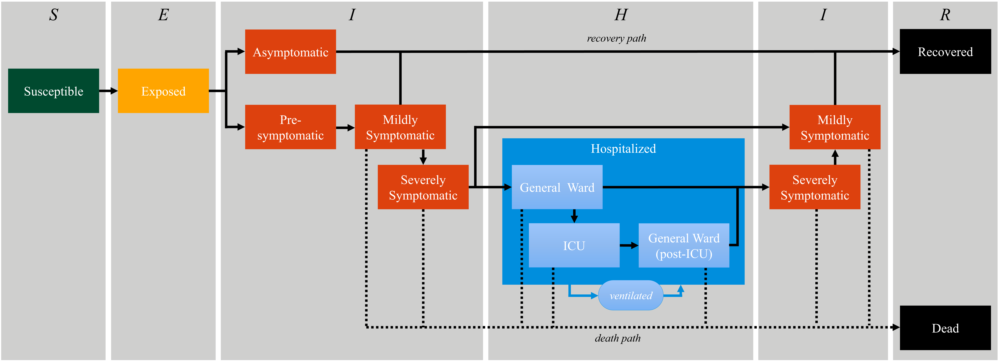

10 - Custom Disease Progressions
As of GEMS v0.7.0, disease progressions are categorized into distinct pathways (e.g., Asymptomatic, Symptomatic, Severe, Hospitalized, Critical). While the default configuration covers a wide range of scenarios, research often requires highly specific progression logic.
In the default model, only the Critical pathway includes a probability of death. But what if we want to model a pathogen where a subset of Severe cases also results in death, without requiring hospitalization or ICU admission?
This tutorial teaches you how to implement a custom disease progression category from scratch and integrate it into your simulation.

Defining the Progression Struct
First, we need to define a new struct that inherits from ProgressionCategory. This struct acts as a container for all the parameters required to calculate the timings of our new disease pathway.
We will call it SevereWithDeath. It requires the standard timeline intervals (from exposure to recovery) plus two new fields: death_probability and severeness_onset_to_death.
using GEMS
using Parameters, Distributions, Random
@with_kw mutable struct SevereWithDeath <: ProgressionCategory
exposure_to_infectiousness_onset::Union{Distribution, Real}
infectiousness_onset_to_symptom_onset::Union{Distribution, Real}
symptom_onset_to_severeness_onset::Union{Distribution, Real}
severeness_onset_to_severeness_offset::Union{Distribution, Real}
severeness_offset_to_recovery::Union{Distribution, Real}
death_probability::Real = 0.0
severeness_onset_to_death::Union{Distribution, Real} = 0.0
endWe use the @with_kw macro from the Parameters.jl package. This allows GEMS to automatically instantiate the struct with keyword arguments parsed directly from your TOML config file!
Implementing the Calculation Logic
Next, we must tell GEMS how to process an individual that gets assigned to this new category. We do this by extending the GEMS.calculate_progression function.
This function rolls the dice for the timeline using GEMS.rand_val. Notice how the progression branches: if the random draw is below death_probability, the individual is assigned a death_time and recovery = -1. Otherwise, they recover normally.
function GEMS.calculate_progression(individual::Individual, tick::Int16, dp::SevereWithDeath;
rng::AbstractRNG = Random.default_rng())
# Standard early disease stages
infectiousness_onset = tick + Int16(1) + GEMS.rand_val(dp.exposure_to_infectiousness_onset, rng)
symptom_onset = infectiousness_onset + GEMS.rand_val(dp.infectiousness_onset_to_symptom_onset, rng)
severeness_onset = symptom_onset + GEMS.rand_val(dp.symptom_onset_to_severeness_onset, rng)
# Branching logic for Death vs. Recovery
if rand(rng) < dp.death_probability
death_time = severeness_onset + GEMS.rand_val(dp.severeness_onset_to_death, rng)
return DiseaseProgression(
exposure = tick,
infectiousness_onset = infectiousness_onset,
symptom_onset = symptom_onset,
severeness_onset = severeness_onset,
severeness_offset = death_time,
recovery = -1, # -1 indicates the event does not occur
death = death_time
)
else
severeness_offset = severeness_onset + GEMS.rand_val(dp.severeness_onset_to_severeness_offset, rng)
recovery = severeness_offset + GEMS.rand_val(dp.severeness_offset_to_recovery, rng)
return DiseaseProgression(
exposure = tick,
infectiousness_onset = infectiousness_onset,
symptom_onset = symptom_onset,
severeness_onset = severeness_onset,
severeness_offset = severeness_offset,
recovery = recovery,
death = -1
)
end
endRegistering the Custom Progression in TOML
Because GEMS automatically parses the TOML configuration to map parameters to your structs, you can simply add a new block to your custom configuration file matching the name of your struct (SevereWithDeath).
You also need to update the progression_assignment matrix to include this new category.
[Pathogens.Covid19.progressions.SevereWithDeath]
death_probability = 0.15
[Pathogens.Covid19.progressions.SevereWithDeath.exposure_to_infectiousness_onset]
distribution = "Poisson"
parameters = [1]
[Pathogens.Covid19.progressions.SevereWithDeath.infectiousness_onset_to_symptom_onset]
distribution = "Poisson"
parameters = [1]
[Pathogens.Covid19.progressions.SevereWithDeath.symptom_onset_to_severeness_onset]
distribution = "Poisson"
parameters = [1]
[Pathogens.Covid19.progressions.SevereWithDeath.severeness_onset_to_severeness_offset]
distribution = "Poisson"
parameters = [7]
[Pathogens.Covid19.progressions.SevereWithDeath.severeness_offset_to_recovery]
distribution = "Poisson"
parameters = [4]
[Pathogens.Covid19.progressions.SevereWithDeath.severeness_onset_to_death]
distribution = "Poisson"
parameters = [5]
[Pathogens.Covid19.progression_assignment]
type = "AgeBasedProgressionAssignment"
[Pathogens.Covid19.progression_assignment.parameters]
age_groups = ["-14", "15-65", "66-"]
# Notice we replaced 'Severe' with 'SevereWithDeath'
progression_categories = ["Asymptomatic", "Symptomatic", "SevereWithDeath", "Hospitalized", "Critical"]
stratification_matrix = [[0.400, 0.580, 0.010, 0.007, 0.003],
[0.250, 0.600, 0.110, 0.030, 0.010],
[0.150, 0.400, 0.250, 0.120, 0.080]]If you define custom structs like SevereWithDeath in an external script or module (like GEMS_NPI_BH), ensure that the struct and functions are properly loaded into your Julia environment before initializing the Simulation("config.toml"). The TOML parser requires the struct definition to exist in the global scope to build it successfully!
Running
Once your struct is loaded and the TOML file is configured, you run the simulation identically to any default setup. You will now observe deaths originating from individuals who never entered the Critical state.